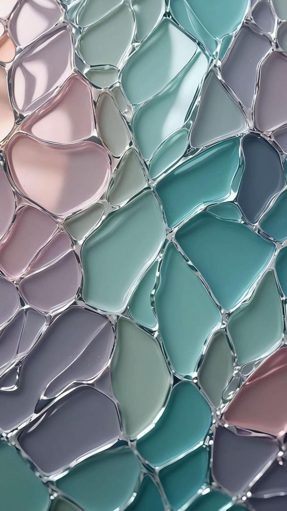

Inspirações do mês

O Que Dizem Nossos Clientes ✨
“Os vitrais da Janela da Alma trouxeram uma nova luz à minha casa — um toque de poesia em cada vidro.”
— Clara Menezes
“A energia das cores transforma o ambiente! Atendimento gentil e resultado impecável.”
— Rafael Duarte
“Cada peça parece contar uma história. É arte viva iluminando meu lar.”